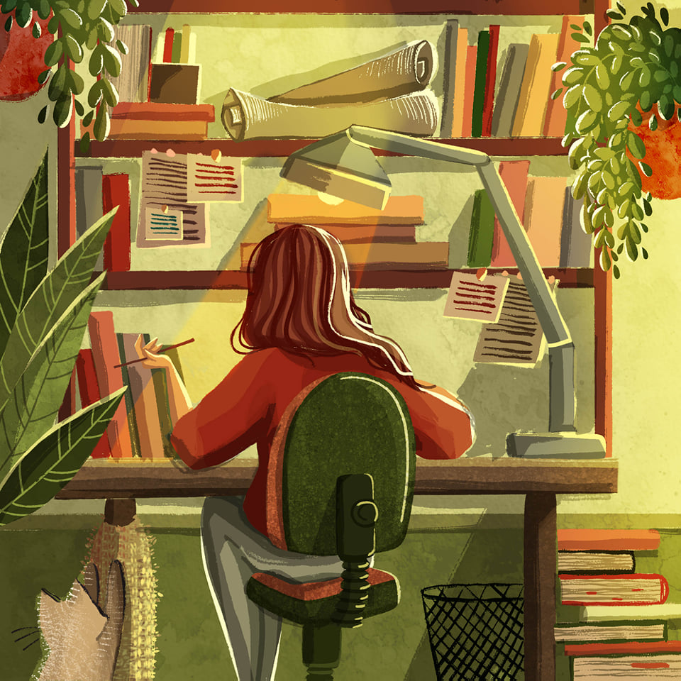

b
This is the first time I made a wedsite so I hope you enjoy the simple page I made. And I believe in the saying that past mistakes should not be planted in our brains because it will pull us down, let's just give it a solution and a lesson on how we can not experience it again and avoid it. Because all mistakes give purpose not misfortune.
My Project